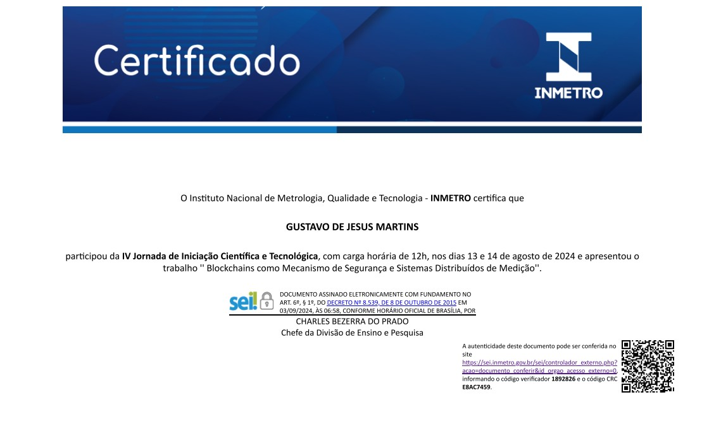
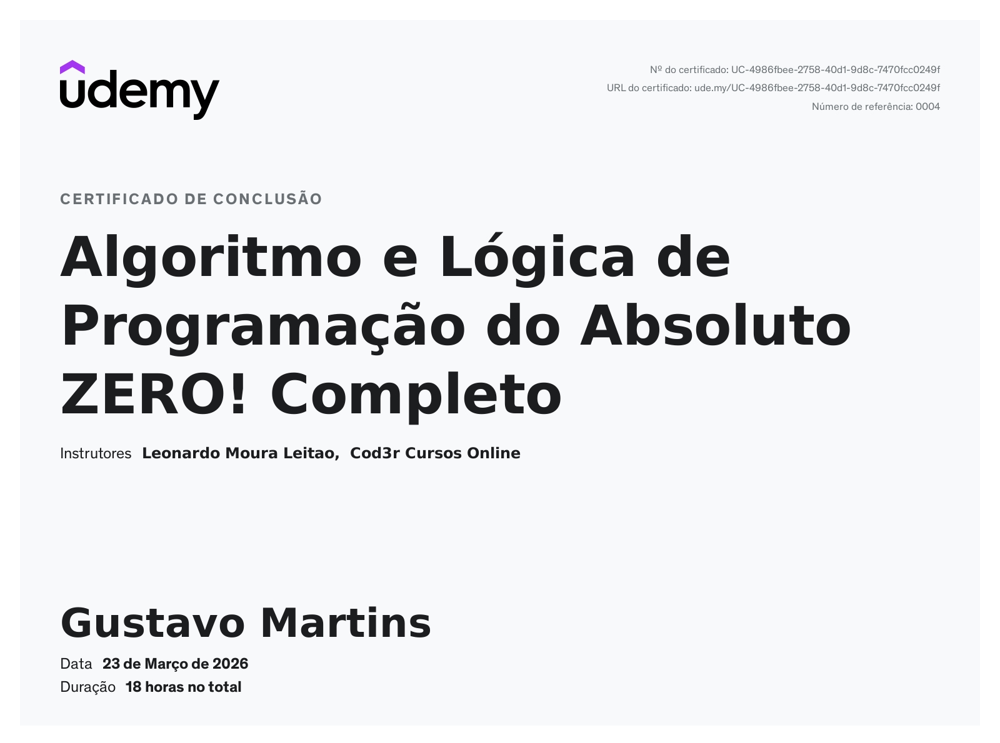

Gustavo Martins
Full-Stack Developer
Full-Stack Developer
Sou estudante de Ciência da Computação, com foco em me tornar desenvolvedor. Atualmente estudo Java e Spring Boot, tenho experiência com HTML, CSS e JavaScript, e já tive contato com redes blockchain em Sistemas Distribuídos de Medição.

Certificado referente a IV Jornada de Iniciação Científica do Instituto Nacional de Metrologia, Qualidade e Tecnologia.

Curso focado nos fundamentos de algoritmos e lógica de programação, abordando conceitos básicos e soluções estruturadas para problemas computacionais.
Curso focado nos fundamentos de algoritmos e lógica de programação, abordando conceitos básicos e soluções estruturadas para problemas computacionais.
Curso voltado à montagem, configuração e manutenção de computadores, abordando diagnóstico de problemas e suporte técnico em hardware e software.